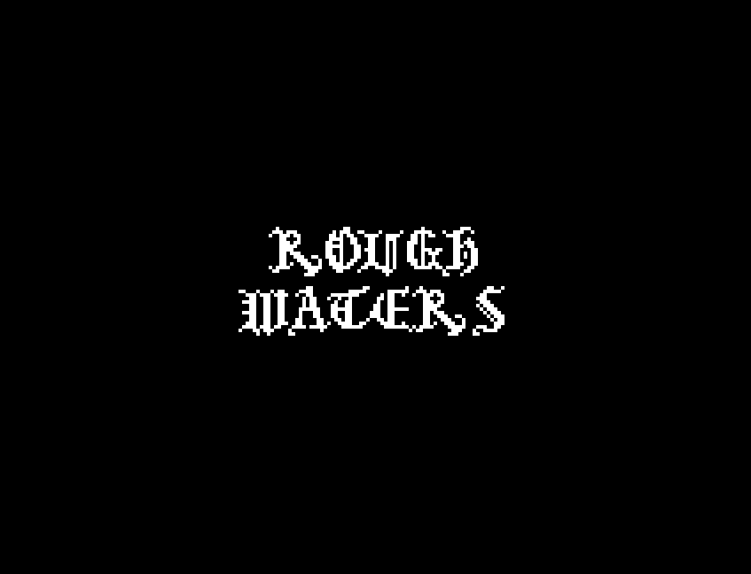

Portfolio
Games



Rough Waters - Under the pseudonym "gentleghost"
Roles: Game Designer| Game Programmer | Composer | Artist
On a job through rough waters, your ship begins to fall apart. With limited resources, you need to ensure your safety to the next dock.
THE EARTHBOUND 64 EXPERIENCE - Under the pseudonym "gentleghost"
Roles: Overworld Programmer
A recreation of the cancelled Nintendo 64 version of MOTHER 3. On the Nowhere Islands, the peaceful town of Tazmily has been invaded by the Pig Army.
DAYCARE DESCENT
Roles: UI Designer | Character Designer | Projectile Programmer
Four toddlers fight off a hoard of toys and nightmares in search of snacks.
SUPER VERTEX | Capstone Project
Roles: Lead Designer | Lead Developer
A solider has to travel to different worlds to fight robots.
VECTOR THE FOX
Roles: Lead Designer | Lead Developer
Vector is off on an adventure to save the world from the evil Chicken King.